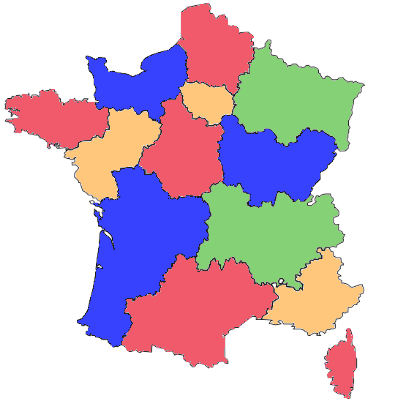

Interrogation sur la POO corrigée¶
Sujet au format PDF
Un pays est composé de différentes régions. Deux régions sont voisines si elles ont au moins une frontière en commun. L’objectif est d’attribuer une couleur à chaque région sur la carte du pays sans que deux régions voisines aient la même couleur et en utilisant le moins de couleurs possibles.
La figure 1 ci-dessous donne un exemple de résultat de coloration des régions de la France métropolitaine.

Rappels
On rappelle quelques fonctions et méthodes des tableaux (le type list en Python) qui pourront être utilisées dans cet exercice :
len(tab): renvoie le nombre d’éléments du tableautab;tab.append(elt): ajoute l’élémentelten fin de tableautab;tab.remove(elt): enlève la première occurrence deeltdetabsieltest danstab. Provoque une erreur sinon.
Exemple :
len([1, 3, 12, 24, 3])renvoie5;- avec
tab = [1, 3, 12, 24, 3], l’instructiontab.append(7)modifietaben[1, 3, 12, 24, 3, 7]; - avec
tab = [1, 3, 12, 24, 3], l’instructiontab.remove(3)modifietaben[1, 12, 24, 3].
Partie 1¶
On considère la classe Region qui modélise une région sur une carte et dont le début de l’implémentation est :
class Region:
" " " Modélise une région d'un pays sur une carte." " "
def __init__(self, nom_region):
'''
initialise une région
: param nom_region (str) le nom de la région
'''
self.nom = nom_region
# tableau des régions voisines, vide au départ
self.tab_voisines = []
# tableau des couleurs disponibles pour colorier la région
self.tab_couleurs_disponibles = ['rouge', 'vert', 'bleu', 'jaune',
'orange', 'marron']
# couleur attribuée à la région et non encore choisie au départ
self.couleur_attribuee = None
Question 1
Associer, en vous appuyant sur l’extrait de code précédent, les noms nom, tab_voisines, tab_couleurs_disponibles et couleur_attribuee au terme qui leur correspond parmi : objet, attribut, méthode ou classe.
Réponse question 1
nom, tab_voisines, tab_couleurs_disponibles et couleur_attribuee sont des attributs de la classe Region.
Question 2
Indiquer le type du paramètre nom_region de la méthode __init__ de la classe Region.
Réponse question 2
nom_region est de type str (chaîne de caractères).
Question 3
Donner une instruction permettant de créer une instance nommée ge de la classe Region correspondant à la région dont le nom est « Grand Est ».
Réponse question 3
Voici l'instruction à saisir pour créer un nouvel objet ge de type Region représentant la région « Grand Est » :
Question 4
Recopier et compléter la ligne 6 de la méthode de la classe Region ci-dessous :
Réponse question 4
On récupère la première couleur dans le tableau de l'attribut tab_couleurs_disponibles de la région référencée par self :
Question 5
Recopier et compléter la ligne 6 de la méthode de la classe Region ci-dessous :
Réponse question 5
On récupère le nombre d'éléments dans le tableau de l'attribut tab_voisines de la région référencée par self :
Question 6
Compléter la méthode de la classe Region ci-dessous à partir de la ligne 6 :
Réponse question 6
On peut l'écrire en une ligne :
def est_coloriee(self):
'''
Renvoie True si une couleur a été attribuée à cette région et False sinon.
: return (bool)
'''
return self.couleur_attribuee != None
Cela revient exactement au même que d'écrire :
Question 7
Compléter la méthode de la classe Region ci-dessous à partir de la ligne 8 :
Réponse question 7
Il faut d'abord vérifier que la couleur couleur soit dans le tableau tab_couleurs_disponibles, et si c'est le cas, on la supprime du tableau :
def retire_couleur(self , couleur):
'''
Retire couleur du tableau de couleurs disponibles de la région si elle est dans ce tableau. Ne fait rien sinon.
: param couleur (str)
: ne renvoie rien
: effet de bord sur le tableau des couleurs disponibles
'''
if couleur in self.tab_couleurs_disponibles:
self.tab_couleurs_disponibles.remove(couleur)
Question 8
Compléter la méthode de la classe Region ci-dessous, à partir de la ligne 7, en utilisant une boucle :
Réponse question 8
Attention, il est bien indiqué dans la consigne d'utiliser une boucle. Autrement, on aurait pu simplement écrire return region in self.tab_voisines.
On va donc parcourir le tableau tab_voisines des régions voisines de la région référencée par self, puis à l'aide d'une condition if ..., on renverra True si l'une des régions voisines de self est la région region.
Si après avoir parcouru tout le tableau on a pas trouvé la région region, on renverra False.
Attention, il faut donc renvoyer False après la boucle, quand tout le parcours est terminé.
Partie 2¶
Dans cette partie :
- on considère qu’on dispose d’un ensemble d’instances de la classe
Regionpour lesquelles l’attributtab_voisinesa été renseigné ; - on pourra utiliser les méthodes de la classe
Regionévoquées dans les questions de la partie 1 :renvoie_premiere_couleur_disponiblerenvoie_nb_voisinesest_colorieeretire_couleurest_voisine
On a créé une classe Pays :
- cette classe modélise la carte d’un pays composé de régions ;
- l’unique attribut
tab_regionsde cette classe est un tableau (typelisten Python) dont les éléments sont des instances de la classeRegion.
Question 9
Recopier et compléter la méthode de la classe Pays ci-dessous à partir de la ligne 7 :
Réponse question 9
def renvoie_tab_regions_non_coloriees(self):
'''
Renvoie un tableau dont les éléments sont les régions du pays sans couleur attribuée.
: return (list) tableau d'instances de la classe Region
'''
tab_r = [] # créer un tableau initialement vide
for r in self.tab_regions: # pour chaque région du pays self
if not r.est_coloriee(): # si la région n'est pas coloriée
tab_r.append(r) # ajouter la région dans le tableau tab_r
return tab_r # renvoyer le tableau des régions non coloriées
Question 10
On considère la méthode de la classe Pays ci-dessous.
def renvoie_max(self):
nb_voisines_max = -1
region_max = None
for reg in self.renvoie_tab_regions_non_coloriees():
if reg.renvoie_nb_voisines() > nb_voisines_max:
nb_voisines_max = reg.renvoie_nb_voisines()
region_max = reg
return region_max
a. Expliquer dans quel cas cette méthode renvoie None.
b. Indiquer, dans le cas où cette méthode ne renvoie pas None, les deux particularités de la région renvoyée.
Réponse question 10
a. La méthode renvoie None dans le cas où toutes les régions sont coloriées. Dans ce cas là, la méthode renvoie_tab_regions_non_coloriees renvoie un tableau vide, et donc la variable region_max conserve sa valeur None initiale jusqu'à son renvoi à la fin de la fonction.
b. La région renvoyée est non coloriée et possède le plus grand nombre de voisins.
Question 11
Coder la méthode colorie(self) de la classe Pays qui choisit une couleur pour chaque région du pays de la façon suivante :
- On récupère la région non coloriée qui possède le plus de voisines.
- Tant que cette région existe :
- La couleur attribuée à cette région est la première couleur disponible dans son tableau de couleurs disponibles.
- Pour chaque région voisine de la région :
- si la couleur choisie est présente dans le tableau des couleurs disponibles de la région voisine alors on la retire de ce tableau.
- On récupère à nouveau la région non coloriée qui possède le plus de voisines.
Réponse question 11
Ici, il faut réutiliser les différentes méthodes définies précédemment.
def colorie(self):
r_max = self.renvoie_max() # récupérer région non coloriée avec le max de voisines
while r_max != None: # tant que cette région existe (ne vaut pas None)
couleur = r_max.renvoie_premiere_couleur_disponible() # récupérer la première couleur disponible
r_max.couleur_attribuee = couleur # attribuer la couleur choisie à cette région
for r in r_max.tab_voisines : # pour chaque région voisine de la région
r.retire_couleur(couleur) # retirer la couleur choisie du tableau des couleurs disponibles
r_max = self.renvoie_max() # récupérer région non coloriée avec le max de voisines